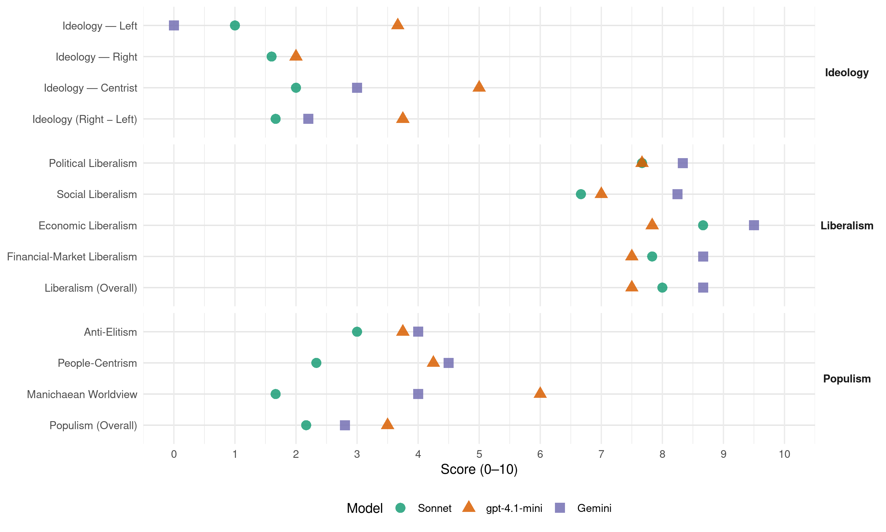

IL (Portugal, 2019)
manifesto_id 35410_201910
Get full text: This site shows derived annotations and short verbatim quotes only. The full manifesto text is © Manifesto Project / WZB — obtain it via manifesto-project.wzb.eu using the manifesto_id above.
Headline scores
| Dimension | Sonnet | gpt-4.1-mini | Gemini |
|---|---|---|---|
| Populism (Overall) | 2.2 | 3.5 | 2.8 |
| Anti-Elitism | 3.0 | 3.8 | 4.0 |
| People-Centrism | 2.3 | 4.2 | 4.5 |
| Manichaean Worldview | 1.7 | 6.0 | 4.0 |
| Ideology (Right − Left) | 1.7 | 3.8 | 2.2 |
| Liberalism (Overall) | 8.0 | 7.5 | 8.7 |
| Political Liberalism | 7.7 | 7.7 | 8.3 |
| Social Liberalism | 6.7 | 7.0 | 8.2 |
| Economic Liberalism | 8.7 | 7.8 | 9.5 |
| Financial-Market Liberalism | 7.8 | 7.5 | 8.7 |
Evidence per dimension
Economic Liberalism
Gemini · score 10.0 · verified · chunk 1
“Privatizar empresas públicas ineficientes”
neutralidade fiscal da descentralização Retirar o Estado da economia e libertar os contribuintes Privatizar empresas públicas ineficientes Elaboração de orçamento de base zero
Gemini · score 10.0 · verified · chunk 2
“Taxa única de IRS de 15%”
C. Proposta Taxa única de IRS de 15%. Para evitar impacto orçamental imediato
Gemini · score 9.0 · verified · chunk 3
“promover a concorrência entre IES”
Promover a concorrência entre IES na atração de talento. Dividir explicitamente a carreira docente
Gemini · score 9.0 · verified · chunk 4
“Aumentar a concorrência na operação”
A. Objetivos Aumentar a concorrência na operação de transportes públicos em Portugal.
Gemini · score 9.0 · verified · chunk 5
“deixar o mercado funcionar sem as distorções”
barreira devia ser levantada e deixar o mercado funcionar sem as distorções. Por outro lado, há também
Gemini · score 10.0 · verified · chunk 6
“deixar o mercado funcionar sem as distorções”
Esta barreira devia ser levantada e deixar o mercado funcionar sem as distorções.
gpt-4.1-mini · score 9.0 · verified · chunk 1
“privatizar empresas públicas ineficientes Elaboração de orçamento de base zero Liberalizar o mercado laboral”
Retirar o Estado da economia e libertar os contribuintes Privatizar empresas públicas ineficientes Elaboração de orçamento de base zero Liberalizar o mercado de trabalho Reforma no sistema político Introdução de círculos uninominais com círculo nacional de compensação Eliminação de variados benefícios fiscais aos partidos Reduzir e democratizar subvenções de campanha dos partidos políticos
gpt-4.1-mini · score 8.0 · verified · chunk 2
“Introdução de uma taxa fixa sobre todos os rendimentos de 15% com eliminação de todas as deduções.”
2.2.1 Introdução de uma taxa fixa sobre todos os rendimentos de 15% com eliminação de todas as deduções. A. Objetivos Redução da complexidade fiscal e respetivos custos administrativos Incentivar a transparência na declaração de rendimentos e cumprimento fiscal.
gpt-4.1-mini · score 8.0 · verified · chunk 3
“Garantir liberdade de escolha de escola pública a alunos e famílias. Fazer depender o financiamento de uma escola do tipo de escola, pública ou privada, e alunos admitidos”
…Garantir liberdade de escolha de escola pública a alunos e famílias. Fazer depender o financiamento de uma escola do tipo de escola, pública ou privada, e alunos admitidos. A educação é um direito consagrado em lei até à maioridade dos jovens…
gpt-4.1-mini · score 7.0 · verified · chunk 4
“mercado, concorrência, negócio, privatização, tributação, comércio, regulação”
Topic check: the quote must mention market, competition, business, enterprise, tax, trade, regulation, privatization, or related economic-policy terms.
gpt-4.1-mini · score 7.0 · verified · chunk 5
“redução dos custos operacionais”
Os objetivos principais da reforma do sector público são, a redução dos custos da operação da Administração e o incremento da qualidade dos serviços públicos, tornando-os mais eficientes, mensuráveis e preditivos…
gpt-4.1-mini · score 8.0 · verified · chunk 6
“Investiu-se no sinal digital, mas continuamos com os mesmos 4 canais em sinal aberto”
Investiu-se no sinal digital, mas continuamos com os mesmos 4 canais em sinal aberto. Esta barreira devia ser levantada e deixar o mercado funcionar sem as distorções.
Sonnet · score 9.0 · verified · chunk 1
“Liberalizar o mercado laboral”
Retirar o Estado da economia e libertar os contribuintes Privatizar empresas públicas ineficientes Elaboração de orçamento de base zero Liberalizar o mercado laboral
Sonnet · score 9.0 · verified · chunk 2
“Taxa única de IRS de 15%”
C. Proposta Taxa única de IRS de 15%. Para evitar impacto orçamental imediato, e ainda assim beneficiar do efeito da simplificação
Sonnet · score 9.0 · verified · chunk 3
“introduz um elemento saudável de competição entre escolas”
Adicionalmente, introduz um elemento saudável de competição entre escolas públicas e privadas, e, na prática, garante que as escolas privadas terão sempre um custo associado
Sonnet · score 8.0 · verified · chunk 4
“Liberalização do acesso ao transporte rodoviário”
Liberalização do acesso ao transporte rodoviário de passageiros interurbano, expresso e internacional, em moldes similares aos de outros transportes, fazendo depender a possibilidade de operar num determinado eixo do cumprimento da legislação aplicável
Sonnet · score 8.0 · verified · chunk 5
“deixar o mercado funcionar sem as distorções”
Esta barreira devia ser levantada e deixar o mercado funcionar sem as distorções. O arquivo audiovisual da RTP já foi adquirido
Sonnet · score 9.0 · verified · chunk 6
“há uma distorção do mercado, havendo um player com receitas públicas garantidas”
A nível de concorrência há uma distorção do mercado, havendo um player com receitas públicas garantidas que opera como os outros no mercado da publicidade
Financial-Market Liberalism
Gemini · score 9.0 · verified · chunk 1
“Privatização da Caixa Geral de Depósitos”
Reconfiguração gradual da taxação dos rendimentos de capital 69 2.2.5 Privatização da Caixa Geral de Depósitos 79 2.2.6 Isenção de IRS nas horas
Gemini · score 10.0 · verified · chunk 2
“Iniciar um processo de privatização da CGD”
Criar legislação impeditiva de injeção de mais capital da CGD; Iniciar um processo de privatização da CGD: Criar a possibilidade de ser vendida
Gemini · score 7.0 · verified · chunk 3
“acesso ao crédito à habitação”
discriminação existente no tratamento da Banca (ex: acesso ao crédito à habitação, cartão de crédito), e porque, no enquadramento
gpt-4.1-mini · score 8.0 · verified · chunk 1
“Supervisão integrada e robusta do sistema financeiro”
2.3.2 Supervisão integrada e robusta do sistema financeiro 87 2.3.3 Liberalização do mercado de trabalho 93 2.3.4 Revogar o regime aplicável a práticas individuais restritivas do comércio..96
gpt-4.1-mini · score 7.0 · verified · chunk 2
“Retirar o Estado do sistema financeiro. Retirar aos partidos do regime um instrumento político.”
2.2.5 Privatização da Caixa Geral de Depósitos A. Objetivos Retirar o Estado do sistema financeiro. Retirar aos partidos do regime um instrumento político. Deixar de socializar os prejuízos de uma gestão política da Caixa Geral de Depositos (CGD). Incentivar maior dinamismo e concorrência no sistema bancário português.
Sonnet · score 8.0 · verified · chunk 1
“Supervisão integrada e robusta do sistema financeiro”
2.3.2 Supervisão integrada e robusta do sistema financeiro 87 2.3.3 Liberalização do mercado de trabalho 93
Sonnet · score 9.0 · verified · chunk 2
“Privatização da Caixa Geral de Depósitos”
2.2.5 Privatização da Caixa Geral de Depósitos A. Objetivos Retirar o Estado do sistema financeiro. Retirar aos partidos do regime
Sonnet · score 8.0 · verified · chunk 3
“deveres de transparência e divulgação de informação”
a ASF (autoridade supervisora) devia supervisionar também a ADSE… obrigados a respeitar capital e dever de transparência
Sonnet · score 7.0 · verified · chunk 4
“amortização da dívida pública e da dívida do setor empresarial”
Diminuição de despesa pública e utilização da receita proveniente da privatização para a amortização da dívida pública e da dívida do setor empresarial do Estado.
Sonnet · score 7.0 · verified · chunk 5
“distorção do mercado, havendo um player com receitas públicas”
há uma distorção do mercado, havendo um player com receitas públicas garantidas que opera como os outros no mercado da publicidade
Sonnet · score 8.0 · verified · chunk 6
“Facilitar a obtenção e a gestão de receitas próprias”
nacional de uma maior autonomia financeira. Facilitar a obtenção e a gestão de receitas próprias (obtidas através do mecenato, patrocínios, parcerias, bilheteira, aluguer de espaços
Political Liberalism
Gemini · score 8.0 · verified · chunk 1
“Combater a corrupção com melhor justiça”
menos centralismo e mais escrutínio do poder político Combater a corrupção com melhor justiça e mais transparência na administração pública Aumentar
Gemini · score 8.0 · verified · chunk 2
“A Constituição pode ser mudada”
Em primeiro lugar, mesmo que violasse, tal não deve ser impedimento à apresentação de propostas. A Constituição pode ser mudada. No entanto, a regra não viola
Gemini · score 8.0 · verified · chunk 3
“essencial ao Estado de Direito”
Trata-se, todavia, de uma área essencial ao Estado de Direito e ao funcionamento da economia, o que impõe permanente atenção.
Gemini · score 8.0 · verified · chunk 4
“essencial ao Estado de Direito”
Trata-se, todavia, de uma área essencial ao Estado de Direito e ao funcionamento da economia
Gemini · score 9.0 · verified · chunk 5
“reforço do processo democrático”
redução da abstenção, e ao reforço do processo democrático; Transformar as Lojas do Cidadão
Gemini · score 9.0 · verified · chunk 6
“independência face ao poder político”
Criará sempre uma dúvida sobre a independência face ao poder político, como acontecia
gpt-4.1-mini · score 8.0 · verified · chunk 1
“Combater a corrupção com melhor justiça e mais transparência na administração pública”
5 objetivos Devolver o poder às pessoas com menos impostos e mais liberdade de escolha Aproximar o poder das pessoas com menos centralismo e mais escrutínio do poder político Combater a corrupção com melhor justiça e mais transparência na administração pública Aumentar a competitividade atraindo capital e libertando os contribuintes dos prejuízos de empresas públicas ineficientes.
gpt-4.1-mini · score 7.0 · verified · chunk 2
“Garantir a modernização tecnológica das escolas públicas. Para que Educação seja eficaz no que respeita à aprendizagem dos alunos, as escolas públicas têm de estar equipadas de forma adequada.”
…Garantir a modernização tecnológica das escolas públicas. Para que Educação seja eficaz no que respeita à aprendizagem dos alunos, as escolas públicas têm de estar equipadas de forma adequada. É necessário assegurar acesso à internet por fibra ótica, rápido e fiável, assim como garantir um computador por aluno, configurado com um sistema operativo moderno e aplicações atualizadas.
gpt-4.1-mini · score 8.0 · verified · chunk 3
“Estabelecer um acordo político sobre Educação entre os principais partidos políticos com assento no Parlamento”
…Estabelecer um acordo político sobre Educação entre os principais partidos políticos com assento no Parlamento, válido para um horizonte temporal de 10 anos. Esse acordo conterá as linhas gerais que caracterizarão as principais políticas educativas…
gpt-4.1-mini · score 8.0 · verified · chunk 4
“violação do art.° 6.° (direito a um processo equitativo) da Convenção Europeia dos Direitos do Homem (CEDH)”
A principal causa de condenação dos Estados europeus no Tribunal Europeu dos Direitos do Homem (TEDH) incide sobre a violação do art.° 6.° (direito a um processo equitativo) da Convenção Europeia dos Direitos do Homem (CEDH) e mais de metade das condenações neste âmbito referem-se à incapacidade de decidir num período de tempo razoável.
gpt-4.1-mini · score 8.0 · verified · chunk 5
“voto eletrónico em dispositivos móveis”
Mandatar a equipa de trabalho de voto eletrónico para que apresente, no espaço de 1 ano, uma solução viável para disponibilizar o voto eletrónico em dispositivos móveis, e que enderece as questões de segurança e confidencialidade subjacentes…
gpt-4.1-mini · score 7.0 · verified · chunk 6
“A democracia só tem a perder com o controlo da RTP pelo Estado”
A democracia só tem a perder com o controlo da RTP pelo Estado. Criará sempre uma dúvida sobre a independência face ao poder político, como acontecia com os jornais controlados pelo PCP.
Sonnet · score 7.0 · verified · chunk 1
“Combater a corrupção com melhor justiça e mais transparência”
5 objetivos … Combater a corrupção com melhor justiça e mais transparência na administração pública Aumentar a competitividade atraindo capital
Sonnet · score 7.0 · verified · chunk 2
“despolitizar e profissionalizar a estrutura”
Simplificar, descentralizar, despolitizar e profissionalizar a estrutura e o funcionamento do Ministério para garantir maior racionalidade
Sonnet · score 8.0 · verified · chunk 3
“despolitizar e profissionalizar a estrutura e o funcionamento”
Simplificar, descentralizar, despolitizar e profissionalizar a estrutura e o funcionamento do Ministério para garantir maior racionalidade, operacionalidade e estabilidade às políticas educativas
Sonnet · score 8.0 · verified · chunk 4
“Estado de Direito e ao funcionamento da economia”
Trata-se, todavia, de uma área essencial ao Estado de Direito e ao funcionamento da economia, o que impõe permanente atenção.
Sonnet · score 8.0 · verified · chunk 5
“reforço do processo democrático”
contribuindo desta forma para a redução da abstenção, e ao reforço do processo democrático; Transformar as Lojas do Cidadão
Sonnet · score 8.0 · verified · chunk 6
“Em democracia não existe nada mais perigosos do que a dúvida constante sobre a independência dos diferentes poderes”
Criará sempre uma dúvida sobre a independência face ao poder político, como acontecia com os jornais controlados pelo PCP. Em democracia não existe nada mais perigosos do que a dúvida constante sobre a independência dos diferentes poderes.
Liberalism (Overall)
Gemini · score 9.0 · verified · chunk 1
“Privatizar empresas públicas ineficientes”
neutralidade fiscal da descentralização Retirar o Estado da economia e libertar os contribuintes Privatizar empresas públicas ineficientes Elaboração de orçamento de base zero
Gemini · score 9.0 · verified · chunk 2
“Iniciar um processo de privatização da CGD”
Criar legislação impeditiva de injeção de mais capital da CGD; Iniciar um processo de privatização da CGD: Criar a possibilidade de ser vendida
Gemini · score 8.0 · verified · chunk 3
“promover a concorrência entre IES”
Promover a concorrência entre IES na atração de talento. Dividir explicitamente a carreira docente
Gemini · score 8.0 · verified · chunk 4
“reforma do Estado de inspiração liberal”
no quadro de uma reforma do Estado de inspiração liberal, estas prestações e serviços essenciais
Gemini · score 9.0 · verified · chunk 5
“deixar o mercado funcionar sem as distorções”
barreira devia ser levantada e deixar o mercado funcionar sem as distorções. Por outro lado, há também
Gemini · score 9.0 · verified · chunk 6
“deixar o mercado funcionar sem as distorções”
Esta barreira devia ser levantada e deixar o mercado funcionar sem as distorções.
gpt-4.1-mini · score 8.0 · verified · chunk 1
“privatizar empresas públicas ineficientes Elaboração de orçamento de base zero Liberalizar o mercado laboral”
Retirar o Estado da economia e libertar os contribuintes Privatizar empresas públicas ineficientes Elaboração de orçamento de base zero Liberalizar o mercado de trabalho Reforma no sistema político Introdução de círculos uninominais com círculo nacional de compensação Eliminação de variados benefícios fiscais aos partidos Reduzir e democratizar subvenções de campanha dos partidos políticos
gpt-4.1-mini · score 7.0 · verified · chunk 2
“Introdução de uma taxa fixa sobre todos os rendimentos de 15% com eliminação de todas as deduções.”
2.2.1 Introdução de uma taxa fixa sobre todos os rendimentos de 15% com eliminação de todas as deduções. A. Objetivos Redução da complexidade fiscal e respetivos custos administrativos Incentivar a transparência na declaração de rendimentos e cumprimento fiscal.
gpt-4.1-mini · score 8.0 · verified · chunk 3
“Garantir liberdade de escolha de escola pública a alunos e famílias. Fazer depender o financiamento de uma escola do tipo de escola, pública ou privada, e alunos admitidos”
…Garantir liberdade de escolha de escola pública a alunos e famílias. Fazer depender o financiamento de uma escola do tipo de escola, pública ou privada, e alunos admitidos. A educação é um direito consagrado em lei até à maioridade dos jovens…
gpt-4.1-mini · score 8.0 · verified · chunk 4
“violação do art.° 6.° (direito a um processo equitativo) da Convenção Europeia dos Direitos do Homem (CEDH)”
A principal causa de condenação dos Estados europeus no Tribunal Europeu dos Direitos do Homem (TEDH) incide sobre a violação do art.° 6.° (direito a um processo equitativo) da Convenção Europeia dos Direitos do Homem (CEDH) e mais de metade das condenações neste âmbito referem-se à incapacidade de decidir num período de tempo razoável.
gpt-4.1-mini · score 7.0 · verified · chunk 5
“redução dos custos da operação da Administração”
Os objetivos principais da reforma do sector público são, a redução dos custos da operação da Administração e o incremento da qualidade dos serviços públicos, tornando-os mais eficientes, mensuráveis e preditivos…
gpt-4.1-mini · score 7.0 · verified · chunk 6
“A democracia só tem a perder com o controlo da RTP pelo Estado”
A democracia só tem a perder com o controlo da RTP pelo Estado. Criará sempre uma dúvida sobre a independência face ao poder político, como acontecia com os jornais controlados pelo PCP.
Sonnet · score 8.0 · verified · chunk 1
“na direção de um Portugal mais liberal”
mas ambas vão na mesma direção, na direção que Portugal precisa, na direção de um Portugal mais liberal. Este é o nosso compromisso.
Sonnet · score 8.0 · verified · chunk 2
“Incentivar maior dinamismo e concorrência no sistema bancário”
Deixar de socializar os prejuízos de uma gestão política da CGD. Incentivar maior dinamismo e concorrência no sistema bancário português.
Sonnet · score 8.0 · verified · chunk 3
“Promover a concorrência entre IES”
Promover a concorrência entre IES na atração de talento. Dividir explicitamente a carreira docente da carreira de investigação
Sonnet · score 8.0 · verified · chunk 4
“reforma do Estado de inspiração liberal”
Independentemente de se dever levar a cabo umas reflexões sobre o seu âmbito, no quadro de uma reforma do Estado de inspiração liberal, estas prestações e serviços essenciais, pela sua importância, devem ser realizadas de forma adequada, eficiente e pronta
Sonnet · score 8.0 · verified · chunk 5
“deixar o mercado funcionar sem as distorções”
Esta barreira devia ser levantada e deixar o mercado funcionar sem as distorções. O arquivo audiovisual da RTP já foi adquirido
Sonnet · score 8.0 · verified · chunk 6
“deixar o mercado funcionar sem as distorções”
Esta barreira devia ser levantada e deixar o mercado funcionar sem as distorções. O arquivo audiovisual da RTP já foi adquirido
Anti-Elitism
Gemini · score 6.0 · verified · chunk 1
“abusos do poder político, a casos de nepotismo”
Estado sobre as pessoas abre a porta a abusos do poder político, a casos de nepotismo e corrupção. Este ciclo só pode ser
Gemini · score 4.0 · verified · chunk 2
“Retirar aos partidos do regime um instrumento político”
Retirar o Estado do sistema financeiro. Retirar aos partidos do regime um instrumento político. Deixar de socializar os prejuízos
Gemini · score 4.0 · verified · chunk 3
“obcecado com o seu controlo”
parceiro no cumprimento da missão de todas as escolas e não dono das escolas públicas obcecado com o seu controlo (micro-management);
Gemini · score 3.0 · verified · chunk 5
“conhecendo as pessoas certas, o processo poderá ter prioridade”
fica a perceção de que, conhecendo as pessoas certas, o processo poderá ter prioridade e avançar mais depressa.
Gemini · score 3.0 · verified · chunk 6
“ferramenta de propaganda mediática”
Retirar das mãos do Estado uma ferramenta de propaganda mediática; Poupança direta
gpt-4.1-mini · score 7.0 · verified · chunk 1
“excessivo poder do Estado sobre as pessoas abre a porta a abusos do poder político, a casos de nepotismo e corrupção”
Vivemos num regime de asfixia fiscal, com excesso de burocracia e poder do Estado sobre a vida das pessoas. Este excessivo poder do Estado sobre as pessoas abre a porta a abusos do poder político, a casos de nepotismo e corrupção. Este ciclo só pode ser quebrado inovando a forma de fazer política e trazendo uma efetiva alternativa ao socialismo.
gpt-4.1-mini · score 4.0 · verified · chunk 2
“Empregadores locais podem ter influência sobre executivos camarários, forçando a baixar, ou não subir, salário mínimo.”
…executivos camarários, forçando a baixar, ou não subir, salário mínimo. É um risco mitigado pelo facto de o executivo precisar de ser reeleito. Sendo os trabalhadores parte do eleitorado, podem punir um executivo que não zele pelos seus interesses numa futura eleição. Sindicatos locais podem ter influência sobre executivos camarários obrigando-os a subir salário mínimo para além do que os empregadores podem pagar…
gpt-4.1-mini · score 2.0 · verified · chunk 3
“O Ministério deve passar a desempenhar o papel de parceiro no desenvolvimento da missão das escolas, abandonando o papel de dono das escolas públicas obcecado com o seu controlo”
…O Ministério deve passar a desempenhar o papel de parceiro no desenvolvimento da missão das escolas, abandonando o papel de dono das escolas públicas obcecado com o seu controlo. O Ministério tem de dispor de uma tecnoestrutura altamente qualificada e motivada…
gpt-4.1-mini · score 2.0 · verified · chunk 5
“resistência à mudança, e barreiras legislativas”
…continuarem a existirem barreiras culturais, que geram grande resistência à mudança, e barreiras legislativas, que inibem a implementação de iniciativas transversais, faz com que a transformação desejável se atrase…
Sonnet · score 4.0 · verified · chunk 1
“abusos do poder político, a casos de nepotismo e corrupção”
Este excessivo poder do Estado sobre as pessoas abre a porta a abusos do poder político, a casos de nepotismo e corrupção. Este ciclo só pode ser quebrado
Sonnet · score 3.0 · verified · chunk 2
“Retirar aos partidos do regime um instrumento político”
Retirar o Estado do sistema financeiro. Retirar aos partidos do regime um instrumento político. Deixar de socializar os prejuízos
Sonnet · score 3.0 · verified · chunk 3
“nomeações políticas têm desempenhado um papel frequentemente pernicioso”
dado que as nomeações políticas têm desempenhado um papel frequentemente pernicioso na racionalidade, qualidade e eficácia do sistema educativo
Sonnet · score 3.0 · verified · chunk 4
“excesso de atos legislativos do Governo”
deve-se, no essencial, ao excesso de atos legislativos com origem no Governo (cujo processo de formação é, por definição pouco transparente) e à crescente negligência do processo legislativo parlamentar
Sonnet · score 2.0 · verified · chunk 5
“política de complacência e inferioridade adotada”
É imprescindível romper com a política de complacência e inferioridade adotada ao longo dos últimos 30 anos
Sonnet · score 3.0 · verified · chunk 6
“Retirar das mãos do Estado uma ferramenta de propaganda mediática”
10.2 Privatização da RTP e abertura TDT A. Objectivos Retirar das mãos do Estado uma ferramenta de propaganda mediática; Poupança direta e indireta
Ideology — Centrist
Gemini · score 3.0 · verified · chunk 2
“Retirar aos partidos do regime um instrumento político”
Retirar o Estado do sistema financeiro. Retirar aos partidos do regime um instrumento político. Deixar de socializar os prejuízos
Gemini · score 3.0 · verified · chunk 3
“obcecado com o seu controlo”
parceiro no cumprimento da missão de todas as escolas e não dono das escolas públicas obcecado com o seu controlo (micro-management);
Gemini · score 3.0 · verified · chunk 5
“administração pública existe para servir os cidadãos”
no conceito de que a administração pública existe para servir os cidadãos. Os cidadãos têm o direito de conhecer
Gemini · score 3.0 · verified · chunk 6
“ferramenta de propaganda mediática”
Retirar das mãos do Estado uma ferramenta de propaganda mediática; Poupança direta
gpt-4.1-mini · score 7.0 · verified · chunk 1
“Devolver o poder às pessoas com menos impostos e mais liberdade de escolha”
5 objetivos Devolver o poder às pessoas com menos impostos e mais liberdade de escolha Aproximar o poder das pessoas com menos centralismo e mais escrutínio do poder político Combater a corrupção com melhor justiça e mais transparência na administração pública Aumentar a competitividade atraindo capital e libertando os contribuintes dos prejuízos de empresas públicas ineficientes.
gpt-4.1-mini · score 6.0 · verified · chunk 2
“Sendo os trabalhadores parte do eleitorado, podem punir um executivo que não zele pelos seus interesses numa futura eleição.”
…É um risco mitigado pelo facto de o executivo precisar de ser reeleito. Sendo os trabalhadores parte do eleitorado, podem punir um executivo que não zele pelos seus interesses numa futura eleição. Sindicatos locais podem ter influência sobre executivos camarários obrigando-os a subir salário mínimo para além do que os empregadores podem pagar…
gpt-4.1-mini · score 4.0 · verified · chunk 3
“Estabelecer um acordo político sobre Educação entre os principais partidos políticos com assento no Parlamento”
…Estabelecer um acordo político sobre Educação entre os principais partidos políticos com assento no Parlamento, válido para um horizonte temporal de 10 anos. Esse acordo conterá as linhas gerais que caracterizarão as principais políticas educativas…
gpt-4.1-mini · score 3.0 · verified · chunk 5
“a administração pública existe para servir os cidadãos”
Esta proposta enquadra-se no conceito de que a administração pública existe para servir os cidadãos. Os cidadãos têm o direito de conhecer como a mesma funciona…
Sonnet · score 2.0 · verified · chunk 1
“inovando a forma de fazer política”
Este ciclo só pode ser quebrado inovando a forma de fazer política e trazendo uma efetiva alternativa ao socialismo.
Sonnet · score 1.0 · verified · chunk 2
“compreensível para o cidadão e investidor”
Ter um sistema fiscal compreensível para o cidadão e investidor. Dar estabilidade ao sistema fiscal no tempo.
Sonnet · score 2.0 · verified · chunk 3
“despolitizar e profissionalizar a estrutura”
Simplificar, descentralizar, despolitizar e profissionalizar a estrutura e o funcionamento do Ministério para garantir maior racionalidade
Sonnet · score 3.0 · verified · chunk 4
“transparência e igualdade no acesso ao emprego público”
Assegurar transparência e igualdade no acesso ao emprego público. Acabar com as nomeações políticas para cargos não políticos.
Sonnet · score 2.0 · verified · chunk 5
“Os partidos existem para servir a democracia”
Os partidos existem para servir a democracia e não para se servir da democracia. O primeiro exemplo de boa gestão deve começar no partido.
Sonnet · score 2.0 · verified · chunk 6
“O Estado não precisa de ser agente”
descentralizando a oferta cultural ao nível mais local. O Estado não precisa de ser agente.
Ideology — Left
Gemini · score 0.0 · verified · chunk 1
“alternativa ao socialismo é o liberalismo”
inovando a forma de fazer política e trazendo uma efetiva alternativa ao socialismo. A única alternativa ao socialismo é o liberalismo. Mas é preciso
gpt-4.1-mini · score 3.0 · verified · chunk 1
“socialismo traz miséria que traz mais socialismo que, por sua vez, traz ainda mais miséria”
Quando chegamos a este ponto, o socialismo já venceu a luta de ideias. É um ciclo vicioso em que socialismo traz miséria que traz mais socialismo que, por sua vez, traz ainda mais miséria. Como quebrar este ciclo? Não faltam exemplos na Europa de países que conseguiram quebrar esse ciclo, países que há duas décadas estavam numa situação muito pior do que a nossa e que graças às reformas certas conseguiram desenvolver-se.
gpt-4.1-mini · score 5.0 · verified · chunk 2
“Promover a justiça entre gerações. Promover a diversificação das fontes de financiamento do sistema de segurança social português.”
2.1.6 Por um sistema de pensões sustentável e pela justiça entre gerações A. Objetivos Promover a justiça entre gerações. Promover a diversificação das fontes de financiamento do sistema de segurança social português. Promover a respetiva sustentabilidade, a poupança e o surgimento de novas fontes de financiamento institucionais na economia portuguesa.
gpt-4.1-mini · score 3.0 · verified · chunk 3
“Corrigir a influência de condições socioeconómicas desfavoráveis através da escolaridade obrigatória em escolas públicas”
…Corrigir a influência de condições socioeconómicas desfavoráveis através da escolaridade obrigatória em escolas públicas. A população estudantil, em Portugal, desde o início do Básico até ao final do Secundário…
Sonnet · score 1.0 · verified · chunk 1
“A única alternativa ao socialismo é o liberalismo”
Este ciclo só pode ser quebrado inovando a forma de fazer política e trazendo uma efetiva alternativa ao socialismo. A única alternativa ao socialismo é o liberalismo.
Sonnet · score 1.0 · verified · chunk 2
“redistribuição. Hoje a maior fonte de desigualdade”
continuaria a existir redistribuição. Hoje a maior fonte de desigualdade é o diferente acesso a serviços públicos
Sonnet · score 1.0 · verified · chunk 3
“Reduzir despesa pública”
Responsabilizar os estudantes pelo custo da sua formação superior. Reduzir despesa pública. Promover a competição entre os estabelecimentos de Ensino Superior
Sonnet · score 1.0 · verified · chunk 4
“pessoas pobres que não tinham capacidade de pagar”
Isso é uma democratização efetiva do transporte aéreo - pessoas pobres que não tinham capacidade de pagar 200€ por um bilhete podem agora viajar para os Açores por um quarto do preço anterior.
Sonnet · score 1.0 · verified · chunk 5
“reduzir o endividamento do Estado”
o desequilíbrio crónico das contas públicas e a necessidade de reduzir o endividamento do Estado determinam um orçamento público para a Defesa exíguo
Sonnet · score 1.0 · verified · chunk 6
“Ninguém fica excluído ou terá tratamento diferenciado”
43 Ninguém fica excluído ou terá tratamento diferenciado tendo em conta o rendimento que tem
Ideology (Right − Left)
Gemini · score 2.0 · verified · chunk 1
“alternativa ao socialismo é o liberalismo”
inovando a forma de fazer política e trazendo uma efetiva alternativa ao socialismo. A única alternativa ao socialismo é o liberalismo. Mas é preciso
Gemini · score 2.0 · verified · chunk 2
“Retirar aos partidos do regime um instrumento político”
Retirar o Estado do sistema financeiro. Retirar aos partidos do regime um instrumento político. Deixar de socializar os prejuízos
Gemini · score 2.0 · verified · chunk 3
“obcecado com o seu controlo”
parceiro no cumprimento da missão de todas as escolas e não dono das escolas públicas obcecado com o seu controlo (micro-management);
Gemini · score 3.0 · verified · chunk 5
“administração pública existe para servir os cidadãos”
no conceito de que a administração pública existe para servir os cidadãos. Os cidadãos têm o direito de conhecer
Gemini · score 2.0 · verified · chunk 6
“ferramenta de propaganda mediática”
Retirar das mãos do Estado uma ferramenta de propaganda mediática; Poupança direta
gpt-4.1-mini · score 5.0 · verified · chunk 1
“excessivo poder do Estado sobre as pessoas abre a porta a abusos do poder político”
Vivemos num regime de asfixia fiscal, com excesso de burocracia e poder do Estado sobre a vida das pessoas. Este excessivo poder do Estado sobre as pessoas abre a porta a abusos do poder político, a casos de nepotismo e corrupção. Este ciclo só pode ser quebrado inovando a forma de fazer política e trazendo uma efetiva alternativa ao socialismo.
gpt-4.1-mini · score 5.0 · verified · chunk 2
“Promover a justiça entre gerações. Promover a diversificação das fontes de financiamento do sistema de segurança social português.”
2.1.6 Por um sistema de pensões sustentável e pela justiça entre gerações A. Objetivos Promover a justiça entre gerações. Promover a diversificação das fontes de financiamento do sistema de segurança social português. Promover a respetiva sustentabilidade, a poupança e o surgimento de novas fontes de financiamento institucionais na economia portuguesa.
gpt-4.1-mini · score 3.0 · verified · chunk 3
“Garantir liberdade de escolha de escola pública a alunos e famílias”
…Garantir liberdade de escolha de escola pública a alunos e famílias. Fazer depender o financiamento de uma escola do tipo de escola, pública ou privada, e alunos admitidos…
gpt-4.1-mini · score 2.0 · verified · chunk 5
“resistência à mudança, e barreiras legislativas”
…continuarem a existirem barreiras culturais, que geram grande resistência à mudança, e barreiras legislativas, que inibem a implementação de iniciativas transversais, faz com que a transformação desejável se atrase…
Sonnet · score 2.0 · verified · chunk 1
“Todos adotaram políticas liberalizantes”
E o que têm em comum esses países? Todos adotaram políticas liberalizantes. Os diferentes partidos que nos governam desde 1974
Sonnet · score 1.0 · verified · chunk 2
“Retirar aos partidos do regime um instrumento político”
Retirar o Estado do sistema financeiro. Retirar aos partidos do regime um instrumento político.
Sonnet · score 1.0 · verified · chunk 3
“despolitizar e profissionalizar a estrutura”
Simplificar, descentralizar, despolitizar e profissionalizar a estrutura e o funcionamento do Ministério para garantir maior racionalidade
Sonnet · score 2.0 · verified · chunk 4
“excesso de atos legislativos do Governo”
deve-se, no essencial, ao excesso de atos legislativos com origem no Governo (cujo processo de formação é, por definição pouco transparente) e à crescente negligência do processo legislativo parlamentar
Sonnet · score 2.0 · verified · chunk 5
“política de complacência e inferioridade adotada”
É imprescindível romper com a política de complacência e inferioridade adotada ao longo dos últimos 30 anos
Sonnet · score 2.0 · verified · chunk 6
“O Estado não precisa de ser agente”
descentralizando a oferta cultural ao nível mais local. O Estado não precisa de ser agente.
Ideology — Right
gpt-4.1-mini · score 2.0 · verified · chunk 3
“Garantir liberdade de escolha de escola pública a alunos e famílias”
…Garantir liberdade de escolha de escola pública a alunos e famílias. Fazer depender o financiamento de uma escola do tipo de escola, pública ou privada, e alunos admitidos…
Sonnet · score 2.0 · verified · chunk 1
“Retirar o Estado da economia e libertar os contribuintes”
Retirar o Estado da economia e libertar os contribuintes Privatizar empresas públicas ineficientes Elaboração de orçamento de base zero
Sonnet · score 2.0 · verified · chunk 2
“mercado de trabalho é cada vez mais global”
O mercado de trabalho é cada vez mais global, principalmente entre os trabalhadores mais qualificados.
Sonnet · score 1.0 · verified · chunk 3
“não há problema cultural em Portugal para soluções liberais”
Resumindo: Não há problema cultural em Portugal para soluções liberais! na área social e na área de saúde
Sonnet · score 2.0 · verified · chunk 5
“soberania nacional e um instrumento essencial”
As Forças Armadas constituem um elemento fundamental da soberania nacional e um instrumento essencial da componente externa da política de defesa
Sonnet · score 1.0 · verified · chunk 6
“ligado diretamente à identidade nacional”
Num sector sensível, ligado diretamente à “identidade nacional” e responsável pela custódia de tesouros nacionais
Manichaean Worldview
Gemini · score 4.0 · verified · chunk 1
“socialismo traz miséria que traz mais socialismo”
venceu a luta de ideias. É um ciclo vicioso em que socialismo traz miséria que traz mais socialismo que, por sua vez, traz ainda mais miséria.
gpt-4.1-mini · score 6.0 · verified · chunk 1
“socialismo traz miséria que traz mais socialismo que, por sua vez, traz ainda mais miséria”
Quando chegamos a este ponto, o socialismo já venceu a luta de ideias. É um ciclo vicioso em que socialismo traz miséria que traz mais socialismo que, por sua vez, traz ainda mais miséria. Como quebrar este ciclo? Não faltam exemplos na Europa de países que conseguiram quebrar esse ciclo, países que há duas décadas estavam numa situação muito pior do que a nossa e que graças às reformas certas conseguiram desenvolver-se.
Sonnet · score 3.0 · verified · chunk 1
“socialismo traz miséria que traz mais socialismo”
É um ciclo vicioso em que socialismo traz miséria que traz mais socialismo que, por sua vez, traz ainda mais miséria. Como quebrar este ciclo?
Sonnet · score 1.0 · verified · chunk 2
“partidos do regime um instrumento político”
Retirar o Estado do sistema financeiro. Retirar aos partidos do regime um instrumento político.
Sonnet · score 1.0 · verified · chunk 3
“legislação publicada é medíocre e traduz uma visão centralista”
A legislação publicada é medíocre e traduz uma visão centralista e irresponsável do que deve significar descentralização
Sonnet · score 2.0 · verified · chunk 4
“o Governo mentiu”
Isto revela uma grande falta de transparência no que toca à gestão das contas públicas e também revela que o Governo mentiu. O Estado não tem o controlo estratégico da TAP.
Sonnet · score 1.0 · verified · chunk 5
“ferramenta de propaganda mediática”
Retirar das mãos do Estado uma ferramenta de propaganda mediática; Poupança direta e indireta na ordem dos 300 milhões de euros
Sonnet · score 2.0 · verified · chunk 6
“a democracia só tem a perder com o controlo da RTP”
Quando chegamos à RTP, que incluí quer os canais televisivos quer estações de rádio, o mesmo deve ser aplicado. A democracia só tem a perder com o controlo da RTP pelo Estado.
People-Centrism
Gemini · score 5.0 · verified · chunk 1
“Devolver o poder às pessoas”
compromisso para um Portugal mais liberal. 5 objetivos Devolver o poder às pessoas com menos impostos e mais liberdade de escolha
Gemini · score 4.0 · verified · chunk 5
“administração pública existe para servir os cidadãos”
no conceito de que a administração pública existe para servir os cidadãos. Os cidadãos têm o direito de conhecer
gpt-4.1-mini · score 6.0 · verified · chunk 1
“Devolver o poder às pessoas com menos impostos e mais liberdade de escolha”
5 objetivos Devolver o poder às pessoas com menos impostos e mais liberdade de escolha Aproximar o poder das pessoas com menos centralismo e mais escrutínio do poder político Combater a corrupção com melhor justiça e mais transparência na administração pública Aumentar a competitividade atraindo capital e libertando os contribuintes dos prejuízos de empresas públicas ineficientes.
gpt-4.1-mini · score 5.0 · verified · chunk 2
“Sendo os trabalhadores parte do eleitorado, podem punir um executivo que não zele pelos seus interesses numa futura eleição.”
…É um risco mitigado pelo facto de o executivo precisar de ser reeleito. Sendo os trabalhadores parte do eleitorado, podem punir um executivo que não zele pelos seus interesses numa futura eleição. Sindicatos locais podem ter influência sobre executivos camarários obrigando-os a subir salário mínimo para além do que os empregadores podem pagar…
gpt-4.1-mini · score 3.0 · verified · chunk 3
“Garantir liberdade de escolha de escola pública a alunos e famílias”
…Garantir liberdade de escolha de escola pública a alunos e famílias. Fazer depender o financiamento de uma escola do tipo de escola, pública ou privada, e alunos admitidos…
gpt-4.1-mini · score 3.0 · verified · chunk 5
“a administração pública existe para servir os cidadãos”
Esta proposta enquadra-se no conceito de que a administração pública existe para servir os cidadãos. Os cidadãos têm o direito de conhecer como a mesma funciona…
Sonnet · score 3.0 · verified · chunk 1
“Devolver o poder às pessoas com menos impostos”
5 objetivos Devolver o poder às pessoas com menos impostos e mais liberdade de escolha Aproximar o poder das pessoas com menos centralismo
Sonnet · score 2.0 · verified · chunk 2
“compreensível para o cidadão e investidor”
Ter um sistema fiscal compreensível para o cidadão e investidor. Dar estabilidade ao sistema fiscal no tempo.
Sonnet · score 2.0 · verified · chunk 3
“liberdade de escolha a alunos e famílias”
é essencial conceder liberdade de escolha a alunos e famílias. Alunos e famílias deverão poder exercer os critérios de escolha que considerem mais apropriados
Sonnet · score 2.0 · verified · chunk 4
“dinheiro dos impostos deve servir para gastos que aproveitem à globalidade da população”
O dinheiro dos impostos deve servir para gastos que aproveitem à globalidade da população, prioritariamente, e só depois para gastos de funcionamento da própria máquina estatal.
Sonnet · score 3.0 · verified · chunk 5
“administração pública existe para servir os cidadãos”
Esta proposta enquadra-se no conceito de que a administração pública existe para servir os cidadãos. Os cidadãos têm o direito de conhecer como a mesma funciona.
Sonnet · score 2.0 · verified · chunk 6
“deixar o mercado funcionar sem as distorções”
Esta barreira devia ser levantada e deixar o mercado funcionar sem as distorções. O arquivo audiovisual da RTP já foi adquirido
Populism (Overall)
Gemini · score 5.0 · verified · chunk 1
“abusos do poder político, a casos de nepotismo”
Estado sobre as pessoas abre a porta a abusos do poder político, a casos de nepotismo e corrupção. Este ciclo só pode ser
Gemini · score 2.0 · verified · chunk 2
“Retirar aos partidos do regime um instrumento político”
Retirar o Estado do sistema financeiro. Retirar aos partidos do regime um instrumento político. Deixar de socializar os prejuízos
Gemini · score 2.0 · verified · chunk 3
“obcecado com o seu controlo”
parceiro no cumprimento da missão de todas as escolas e não dono das escolas públicas obcecado com o seu controlo (micro-management);
Gemini · score 3.0 · verified · chunk 5
“conhecendo as pessoas certas, o processo poderá ter prioridade”
fica a perceção de que, conhecendo as pessoas certas, o processo poderá ter prioridade e avançar mais depressa.
Gemini · score 2.0 · verified · chunk 6
“ferramenta de propaganda mediática”
Retirar das mãos do Estado uma ferramenta de propaganda mediática; Poupança direta
gpt-4.1-mini · score 6.0 · verified · chunk 1
“excessivo poder do Estado sobre as pessoas abre a porta a abusos do poder político”
Vivemos num regime de asfixia fiscal, com excesso de burocracia e poder do Estado sobre a vida das pessoas. Este excessivo poder do Estado sobre as pessoas abre a porta a abusos do poder político, a casos de nepotismo e corrupção. Este ciclo só pode ser quebrado inovando a forma de fazer política e trazendo uma efetiva alternativa ao socialismo.
gpt-4.1-mini · score 4.0 · verified · chunk 2
“Empregadores locais podem ter influência sobre executivos camarários, forçando a baixar, ou não subir, salário mínimo.”
…executivos camarários, forçando a baixar, ou não subir, salário mínimo. É um risco mitigado pelo facto de o executivo precisar de ser reeleito. Sendo os trabalhadores parte do eleitorado, podem punir um executivo que não zele pelos seus interesses numa futura eleição. Sindicatos locais podem ter influência sobre executivos camarários obrigando-os a subir salário mínimo para além do que os empregadores podem pagar…
gpt-4.1-mini · score 2.0 · verified · chunk 3
“O Ministério deve passar a desempenhar o papel de parceiro no desenvolvimento da missão das escolas, abandonando o papel de dono das escolas públicas obcecado com o seu controlo”
…O Ministério deve passar a desempenhar o papel de parceiro no desenvolvimento da missão das escolas, abandonando o papel de dono das escolas públicas obcecado com o seu controlo. O Ministério tem de dispor de uma tecnoestrutura altamente qualificada e motivada…
gpt-4.1-mini · score 2.0 · verified · chunk 5
“resistência à mudança, e barreiras legislativas”
…continuarem a existirem barreiras culturais, que geram grande resistência à mudança, e barreiras legislativas, que inibem a implementação de iniciativas transversais, faz com que a transformação desejável se atrase…
Sonnet · score 3.0 · verified · chunk 1
“poder do Estado sobre as pessoas tem aumentado”
Ano após ano, mandato após mandato, o poder do Estado sobre as pessoas tem aumentado. Vivemos num regime de asfixia fiscal
Sonnet · score 2.0 · verified · chunk 2
“Retirar aos partidos do regime um instrumento político”
Retirar o Estado do sistema financeiro. Retirar aos partidos do regime um instrumento político. Deixar de socializar os prejuízos
Sonnet · score 2.0 · verified · chunk 3
“nomeações políticas têm desempenhado um papel frequentemente pernicioso”
dado que as nomeações políticas têm desempenhado um papel frequentemente pernicioso na racionalidade, qualidade e eficácia do sistema educativo
Sonnet · score 2.0 · verified · chunk 4
“excesso de atos legislativos do Governo”
deve-se, no essencial, ao excesso de atos legislativos com origem no Governo (cujo processo de formação é, por definição pouco transparente) e à crescente negligência do processo legislativo parlamentar
Sonnet · score 2.0 · verified · chunk 5
“administração pública existe para servir os cidadãos”
Esta proposta enquadra-se no conceito de que a administração pública existe para servir os cidadãos. Os cidadãos têm o direito de conhecer como a mesma funciona.
Sonnet · score 2.0 · verified · chunk 6
“Retirar das mãos do Estado uma ferramenta de propaganda mediática”
10.2 Privatização da RTP e abertura TDT A. Objectivos Retirar das mãos do Estado uma ferramenta de propaganda mediática; Poupança direta e indireta
Social Liberalism